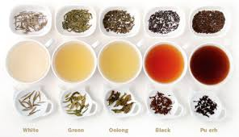
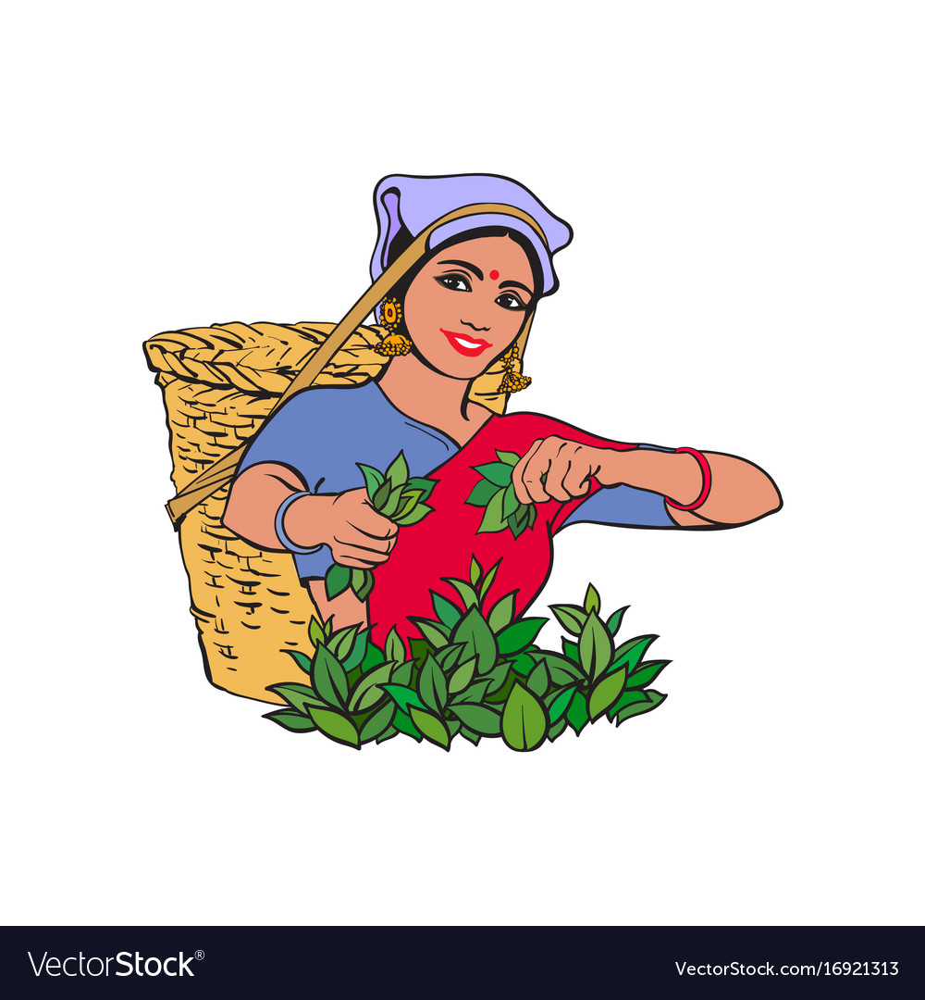

There are seven tea-growing regions in Sri Lanka. Ceylon teas are classified at three different altitudes.
Some producers sell green tea and other varieties of tea, but most are black.


Nuwara Eliya is the largest tea-producing area in Sri Lanka.
Its terroir produces tea with a delicate,floral scent and a light, brisk taste.
Uva is a high-growth tea area in central Sri Lanka.
It produces black tea with a strongly sweet taste and a woody scent.
Few white teas are also manufactured in Uva.
Dimbula is a tea-growing area of central Sri Lanka.
It is the southernmost component of the three well-known tea areas.
The terroir is very varied with the elevation.
Uda Pussellawa: Uda Pussellawa is close to Nuwara Eliya, in a region that has heavy rainfall.
Its tea is similar to tea from Nuwara Eliya, but darker, with a pinkish hue and a stronger flavor.
Kandy is a medium elevation district that grows mid-grown teas. Generally, the tea is full-bodied.
Ruhuna and Sabaragamuwa are lower elevation regions growing low-grown black teas.
Most teas grown in these regions are processed as orange pekoes.